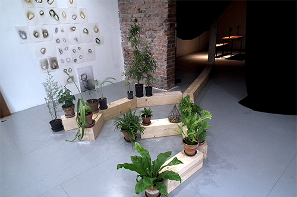
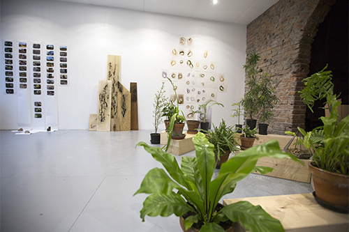
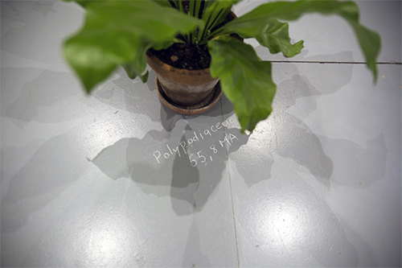

Vue de l'exposition, Installation sonore binaurale et projection de la vidéo réalisée à l'occasion de Concerto pour montée de sève sur le Site expérimental CEFE-CNRS de la forêt de Puechabon, dans l'Hérault, Nicolas Bralet, Delphine Chevrot, François-David Collin et Sabrina Issa LAAB à Reticular, Saint Etienne, 2018.
FRACTOGRAPHIE
RESIDENCE DE RECHERCHE ET DE CREATIONPour ce temps de résidence et d’exposition, le LAAB souhaite porter le regard sur les mécanismes d’une émergence de la forme. Dans l'espace d'installation, photographies, installation sonore, arbres électriques, dessins, conservatoire vivant de plantes fossiles, roches soufflées… sont réalisés in situ. Le collectif sur le temps de résidence organise la rencontre avec une matière et fonctionne par effets structurants sur les installations.

Work in progress, Plantes pangéniques, installation dimensions variables, Sabrina Issa LAAB à Reticular, Saint Etienne, 2018.

Vue de l'exposition, Nicolas Bralet, Delphine Chevrot, François-David Collin et Sabrina Issa LAAB à Reticular, Saint Etienne, 2018.

Work in progress, Plantes pangéniques, installation dimensions variables, Sabrina Issa LAAB à Reticular, Saint Etienne, 2018.